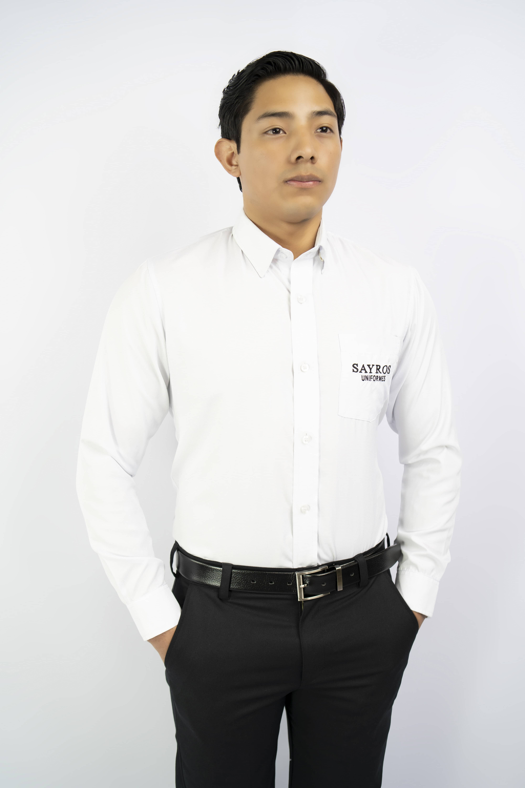
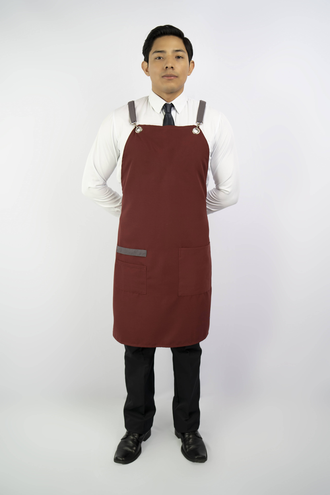
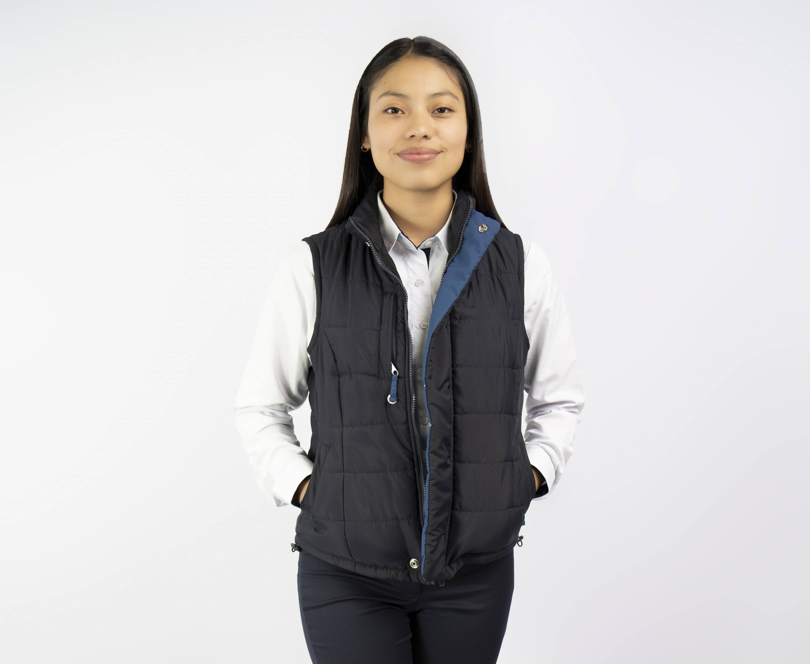

La selección adecuada de la tela es fundamental al diseñar uniformes empresariales, ya que determina no solo la estética del uniforme, sino también su desempeño, durabilidad y confort. Un uniforme bien fabricado debe resistir la rutina diaria, mantener una buena presentación y brindar comodidad al colaborador, por lo que entender las características de cada tipo de tela es un paso esencial para cualquier empresa que busque calidad.
Poliéster
El poliéster es una de las telas más resistentes para uniformes, gracias a su durabilidad, firmeza y capacidad para conservar los colores por más tiempo. No se arruga con facilidad y necesita poco mantenimiento, lo que lo convierte en una elección ideal para empresas que buscan uniformes de larga vida útil. Es perfecto para entornos donde los colaboradores están en constante movimiento o expuestos a desgaste físico. Una de las ventajas de nuestras telas es que trae protección solar y control de humedad, y repelencia al agua.
Poliéster y Algodón
La combinación de algodón y poliéster logra un equilibrio excepcional entre comodidad y durabilidad. Esta mezcla resiste mejor el lavado continuo, mantiene una buena apariencia y se siente más ligera y suave. Es una de las alternativas más utilizadas en uniformes empresariales debido a su rendimiento general. Su costo suele ser ligeramente mayor que el de una tela 100% algodón, pero la inversión se ve compensada por su vida útil superior.
Telas antifluido
por su construcción con microfibra y protector textil que repele los líquidos y la mugre, te protegen de salpicaduras evitando que tu cuerpo entre en contacto con estos. Sus acabados especiales protegen la tela de manchas y hacen mucho más fácil el cuidado de las mismas, además de su agradable sensación al tacto.
Tela strech
Bases que por su strech mecánico permite mayor flexibilidad dando más libertad de movimiento comodidad y ajuste perfecto de la prenda.
Telas impermeables
Gracias a su impermeabilidad te sentirás cómodo y protegido de factores ambientales externos como el agua y el frio
Tejido de punto
Son bases de alto desempeño que gracias a su tecnología absorben, secan y expulsan la humedad del cuerpo generando una sensación de frescura y comodidad. su contracción hace que tenga buena flexibilidad y se sientan suaves al contacto con la piel.
Tejido liviano
Son telas para camisa que son livianos a base de algodón y poliéster, con tacto suave y muy cómodo.
 -->